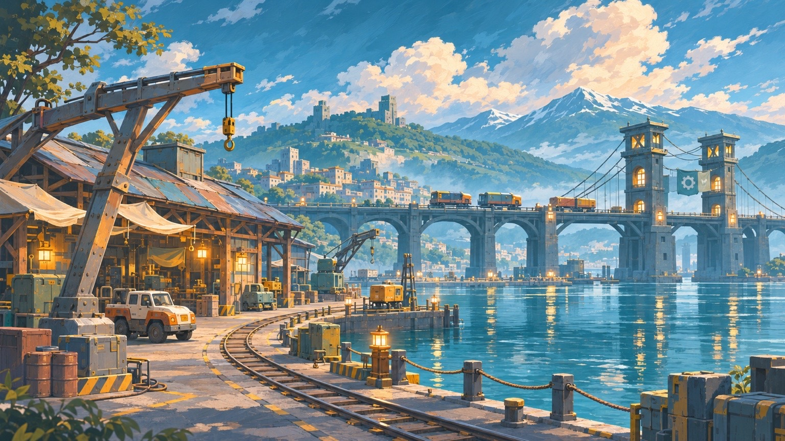
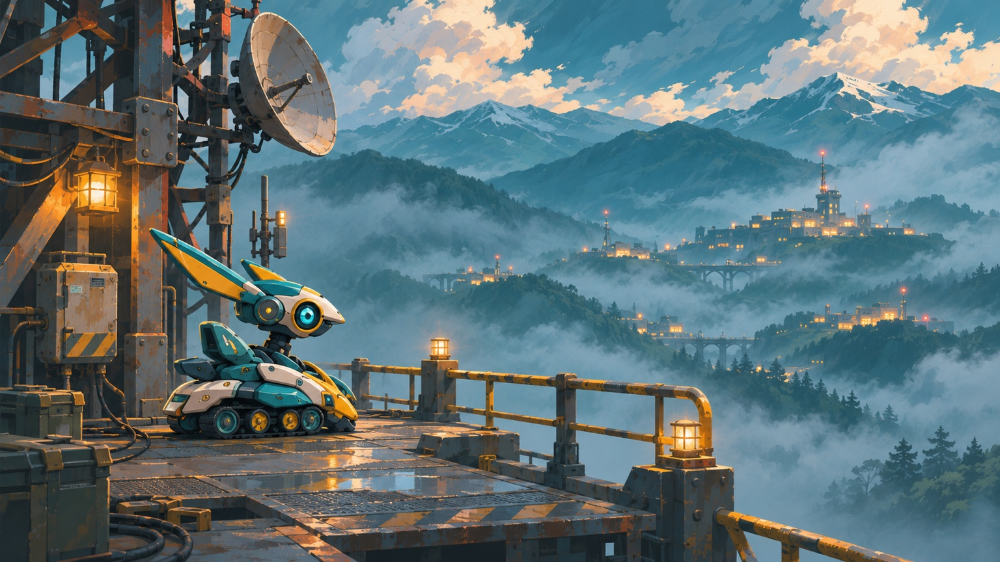

UPDATE 0.14.0 / 2026.11.01絵の中を、
旅する。
動いていた港。途切れた橋。封蝋に残る、小さな印。23の採用イラストを、視点と光、物語の間でつないだ、新しいシネマティックへ。
旅へ戻る →
見せたいものへ、ゆっくり視点を。
橋の切断部へ寄り、便りに目を落とし、向こう岸の応答灯を見つける。場面ごとのカメラ、霧や実用灯、必要な細部だけの短い拡大で、絵の筆致を保ちながら物語を伝えます。
プロローグ8ショット、30・60面の幕間は各2ショット、エピローグは11ショット。加入順とつながる出会いから、帰り着いた先の仕事までを描きます。
自分の速さで。
全文表示、一時停止、場面送り、スキップ。途中で待たされず、必要なら旅の記録から再生できます。
縦でも、横でも。
物語と仲間の画面はスマホ縦向きにも対応。大切な機体、便り、橋を切らない構図へ調整しました。戦闘は引き続き横向きです。
仲間を、わかりやすく。
正式な名前、役割、想いと、解放済み・編成中の状態を一緒に。切り替えを確定するまで、今の機体は変わりません。
返事を見つける、霧の谷。

終盤の真相は、本編で。クリア済みの場面も、旅の記録から新しい演出で振り返れます。
今回、攻略記録は戻りません。
0.13からの進行・所有機体・持ち物・設定を引き継ぎます。能力値、射撃、移動、100面の地形や難易度、ゲーム内の機体描画も保持しています。動きを減らす設定では、静かな構図とフェードへ切り替わります。